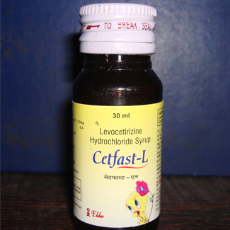

Indications:- Seasonal and Perennial Allergic Rhinitis and Urticaria.
- 
Levocetirizine Suspension

Levocetirizine Dihydrochloride
SUSPENSION PRESENTATION:
Each 5 ml contains:
Levocetirizine Dihydrochloride 2.5 mg

Levocetirizine Dihydrochloride Suspension:
levocetirizine is an antihistamine that reduces the natural chemical histamine in the body. Histamine can produce symptoms of sneezing, itching, watery eyes, and runny nose. Levocetirizine Hcl works by blocking the actions of histamine. Levocetirizine Hcl is used to treat symptoms of perennial allergies in adults and children who are at least 6 months old. Levocetirizine Hcl is also used to treat symptoms of seasonal allergies in adults and children who are at least 2 years old and it is also used to treat itching and swelling caused by chronic urticaria (hives) in adults and children who are at least 6 months old.

Allergic Rhinitis: Levocitrizine is indicated for the relief of symptoms associated with allergic rhinitis (seasonal and perennial) in adults and children 6 years of age and older.
Chronic Idiopathic Urticaria: Levocitrizine is indicated for the treatment of the uncomplicated skin manifestations of chronic idiopathic urticaria in adults and children 6 years of age and older.


Absorption: Rapidly and extensively absorbed. T max is 0.9 h. C max is 270 and
308 ng/mL after single and repeated once-daily dosing, respectively. Steady
state achieved after 2 days.
Distribution: Plasma protein binding about 92%. Vd is approximately 0.4 L/kg.
Metabolism: Metabolism is less than 14% and by aromatic oxidation, N- and Odealkylation, and taurine conjugation.
Elimination: The t ½ is about 8 to 9 h. Elimination is 85.4% and 12.9% via urine and feces, respectively. Excreted both by glomerular filtration and active tubular transport.

The active component of Levocetirizine dihydrochloride, is the R enantiomer of cetirizine hydrochloride, a racemic compound with antihistaminic properties. It is an orally active and selective H1-receptor antagonist. Histamines act on H1 receptors, causing the symptoms commonly seen in allergic reactions. Its inhibits these H1 receptors.

Like cetirizine, levocetirizine is to a high degree excreted unchanged: less than 14% of a given dose is converted into metabolites. There are several different metabolic pathways, including through the CYP1A2, 2C9, 2C19, 2D6, 2E1 and 3A4t pathways in the liver. A total of 13 different metabolites have been observed. In vitro studies have shown that levocetirizine does not affect the CYP isoenzymes of the liver, and the risk of interactions in connection with metabolism is considered to be very low.
There is a risk of interaction if the drug is used concurrently with alcohol or other CNS depressants.

The most commonly reported adverse effects are:
- Sleepiness
- Dizziness
- Dry Mouth

"This medication is not applicable since they are intended for use in children from 6months to 12 years of age."
"However, this information is relevant to the active Ingredients, Levocetirizine dihydrochloride."
"Caution when driving or operating machinery."
"Response to medication may vary from one individual to another, contain side effects like (vertigo, dizzies nervousness, insomnia) that have been reported very rarely with the medicine may affect some patient's ability to drive, operate machinery."

Store in a well closed container in cool, dry place, away from direct heat and light.

From the above discussion, it can be concluded that this Levocetirizine dihydrochloride suspension could improve the quality of life of children with Allergic Rhinitis and Chronic Idiopathic Urticaria.
We are making superior quality of Levocetirizine dihydrochloride Suspension that is used to treat Allergic Rhinitis and Chronic Idiopathic Urticaria. Our offered suspension is processed using high grade chemical compounds and other required drugs by our experienced quality controllers that ensure its quality, purity and chemical properties. Highly treasured among the clients for its reliability, accurate composition, excellent physical and purity, this suspension is offered to our esteemed clients at the market leading prices.